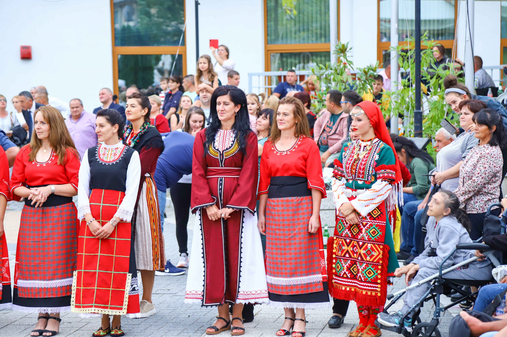

Над 1350 изпълнители и гостуващи състави от 4 държави се представят на Националния фолклорен фестивал в Неделино
Над 1350 изпълнители от 95 читалища  от всички фолклорни области в страната и гостуващи състави от 4 държави се представят на провеждащия се Национален фолклорен фестивал за двугласно пеене и народна песен с международно участие в Неделино, съобщи кметът на общината Боян Кехайов. Юбилейното 20-о издание на фестивала протича при изключително голям интерес от участници и публика, организаторите отчитат рекорден брой изпълнители за десетилетната история на музикалното събитие. Третият фестивален ден ще приключи днес с церемония за връчване на наградите на отличените участници.
Извън конкурсната програма на фестивалната сцена се представят гостуващи фолклорни състави от Гърция, Турция, Босна и Херцеговина и Молдова. Част от заявените чуждестранни участници не стигнаха до България заради ограничения около усложнената епидемична обстановка.
Фестивалът е посветен на уникалния неделински двуглас, който е характерен само за района на Неделино и вече е включен в учебните дисциплини на АМТИИ-Пловдив.